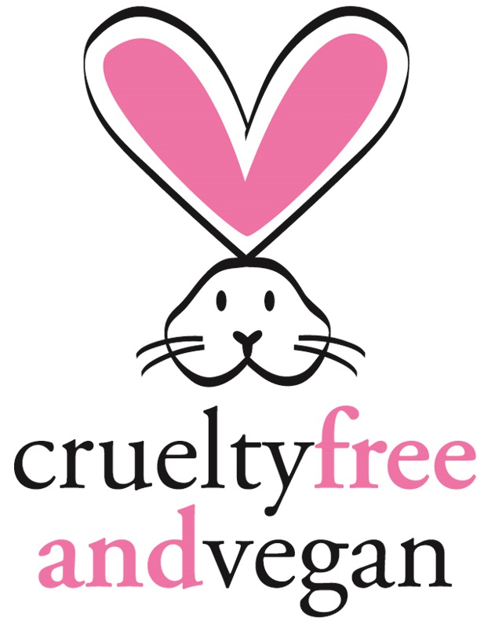
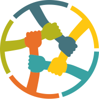

Reinventar un Clásico
Nos hemos visto desafiados constantementes, buscando nuevos sabores.
Por eso una de nuestras misiones es traerte un sabor diferente constantemente, por lo cual
estamos siempre creando nuevos experimentos. Sin embargo siempre tenemos nuestros clásicos ñoquis. Entonces
¡Atrevete a probar nuestros ñoquis de Beterraga o Zapallo!, prometemos que no te arrepentirás.
Próximanente tendremos Ñoquis Dulces.

Cruelty Free | Vegetariano & Vegano
Somos amantes de los animales y queremos reflejar eso en nuestra cocina, por eso tenemos opciones para Vegetarianos & Veganos, pero también entendemos que no todos tenemos la misma filosofia y por ello ocupamos huevos de Gallinas Felices en nuestras recetas más tradicionales.
ZeroWaste
Así como amamos a los animales, ¡Amamos nuestro planeta!
por lo que nos comprometemos a reducir al máximo nuestros desechos y nuestra huella de carbono. Por ello tenemos
equipos de máxima eficiencia, compramos a granel y nuestros residuos orgánicos los compostamos.
¡Súmate! Es un camino de ida.
Compromiso Social
También creemos en las segundas oportunidades, por eso nos comprometemos a contratar a personas que no han tenido las mejores posibilidades de vida o educación, así también a personas en rehabilitación, personas con capacidades diferentes, y hacemos eventos a beneficio de diferentes causas constantemente. Cuentanos cual es tu próximo proyecto y te ayudaremos con el evento, donando un catering.
